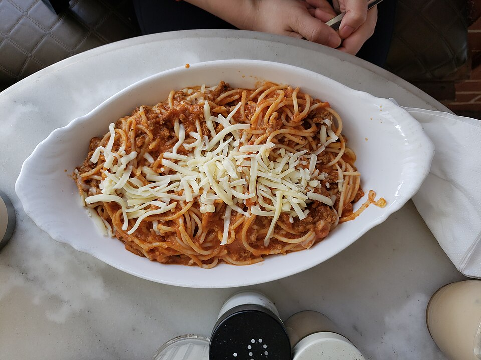

Massas
Espaguete à bolonhesa

Ingredientes
- 2 fatias de bacon picado
- 2 colheres (sopa) de óleo
- 2 cebolas raladas
- 1 cenoura picada
- 1 alho-poró (parte branca), em rodelas
- 400 g de carne magra moída
- Pimenta-do-reino a gosto
- 4 dentes de alho esmagados
- 1 maço de cheiro-verde
- 1 folha de louro
- 1 ramo de tomilho
- 1 kg de tomate, sem pele e sem sementes, picado
- 2 tabletes de caldo de galinha dissolvidos em 2 xícaras (chá) de água fervente
- 1 xícara (chá) de vinho branco seco
- 3 colheres (sopa) de extrato de tomate
- Queijo parmesão ralado a gosto
- 500 g de macarrão espaguete
Modo de preparo
- Doure o bacon no óleo. Refogue a cebola, a cenoura e o alho-poró.
- Junte a carne, a pimenta, o alho, o cheiro-verde, o louro e o tomilho. Adicione o tomate e cozinhe 15 minutos, mexendo de vez em quando.
- Acrescente o caldo, o vinho e o extrato. Tampe, abaixe o fogo e cozinhe até o molho ficar consistente. Retire o cheiro-verde.
- Cozinhe o espaguete em água fervente até ficar al dente. Escorra, junte o molho e polvilhe com parmesão.
Observação: recorte promocional Maggi; o pacote original citava macarrão da marca.